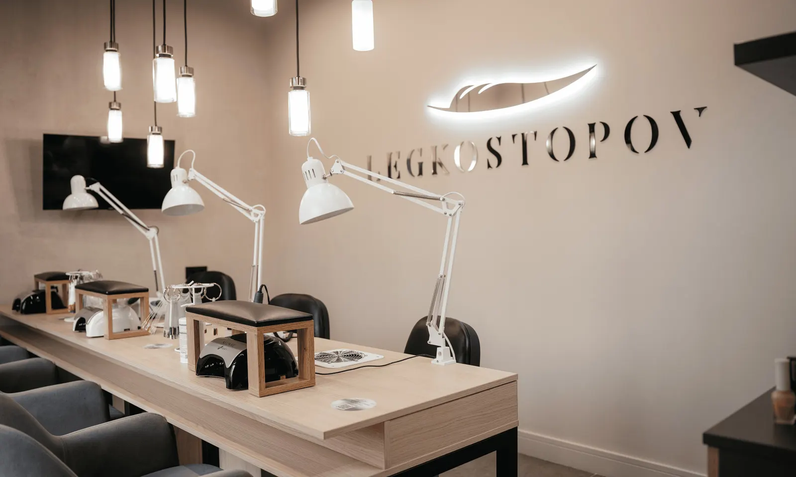
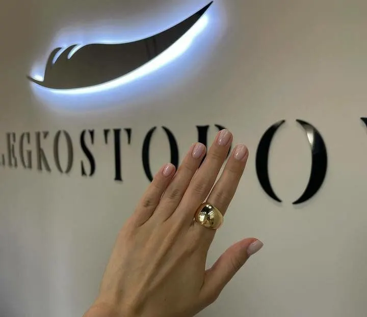
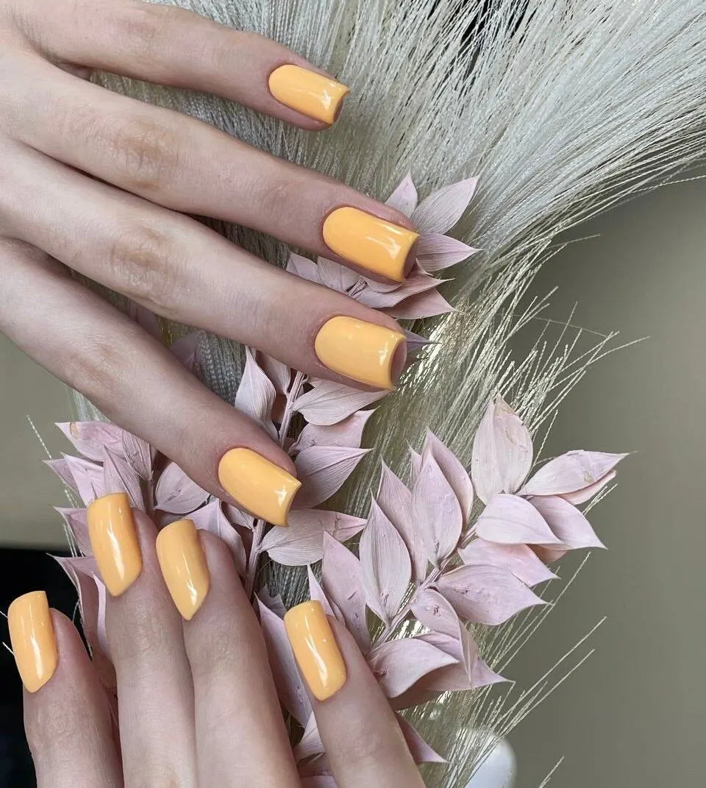
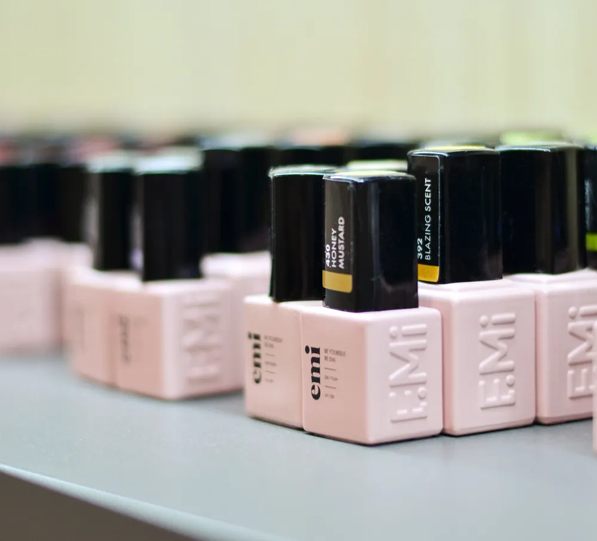

Центр подологии и ногтевого сервиса · Некрасова, 41
Подология и маникюр в одном центре на Некрасова
Подолог поможет с вросшим ногтем и натоптышами, мастера – с маникюром, педикюром и наращиванием. Онлайн-запись, которую можно перенести самостоятельно.
- Подолог и медицинский маникюр
- Рейтинг 5,0, 131 оценка
- Ежедневно 09:00–21:00

Услуги и цены
Цен на карточке нет – стоимость назовут при записи
Подология
- Консультация подологапо запросу
- Вросший ноготь, натоптышипо запросу
- Медицинский педикюрпо запросу
Ногтевой сервис
- Маникюр с покрытиемпо запросу
- Педикюр с покрытиемпо запросу
- Наращивание и дизайнпо запросу
- Брови и ресницыпо запросу
Есть мужской ногтевой сервис, подарочный сертификат и магазин косметики.
Как записаться
- 01
Выбираете услугу, день и время
В форме наверху страницы – сообщение уйдёт в WhatsApp.
- 02
Студия подтверждает время
Если окно занято, предложат ближайшее.
- 03
Приходите: улица Некрасова, 41
Ежедневно 09:00–21:00.



За что хвалят в отзывах
Свой подолог
«Долго искала «своего» подолога, нашла именно здесь», – Ирина Б.
Решают проблему сразу
Подолог «сразу обнаружила проблему и устранила её» – Татьяна Завьялова.
Идеальная чистота
«Люблю этот салон за идеальную чистоту, уют и доброжелательное отношение».
Современное оборудование
Стильный зал и консультации по уходу за стопами.
Отзывы с Яндекс.Карт
«Прекрасный салон, очень отзывчивый персонал, ненавязчивый сервис. Долго искала «своего» подолога, нашла именно здесь - Валерия»
Ирина Б. · 28 февраля
«Люблю этот салон за идеальную чистоту, уют и доброжелательное отношение.»
Марина · 3 марта
«Стильный салон, с современным оборудованием.»
Алёна Титова · 1 сентября
Отзывы с карточки на Яндекс.Картах, без правок.
Частые вопросы
С чем поможет подолог?
Вросший ноготь, натоптыши, мозоли, трещины, профилактика и уход за стопами.
Можно перенести запись?
Да, онлайн-запись можно корректировать самостоятельно.
Делаете мужской маникюр?
Да, есть мужской ногтевой сервис.
Где вы находитесь?
Новосибирск, улица Некрасова, 41. Ежедневно 09:00–21:00.
Запишитесь к подологу или мастеру
- Адрес
- улица Некрасова, 41, Новосибирск
- Часы
- Ежедневно 09:00–21:00
- Телефон
- +7 (991) 779-26-95